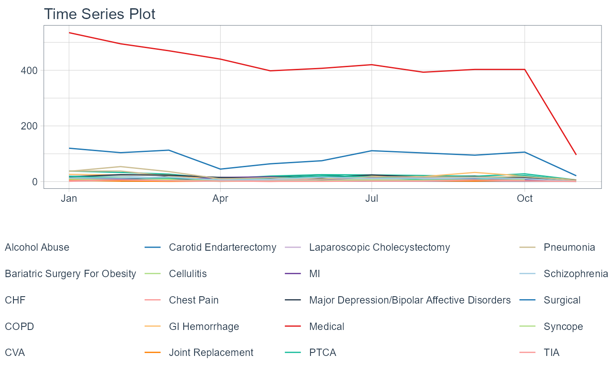

This is a warpper function to the timetk::plot_time_series() function with
a limited functionality parameter set. To see the full reference please visit
the timetk package site.
Usage
ts_plt(
.data,
.date_col,
.value_col,
.color_col = NULL,
.facet_col = NULL,
.facet_ncol = NULL,
.interactive = FALSE
)Arguments
- .data
The data to pass to the function, must be a tibble/data.frame.
- .date_col
The column holding the date.
- .value_col
The column holding the value.
- .color_col
The column holding the variable for color.
- .facet_col
The column holding the variable for faceting.
- .facet_ncol
How many columns do you want.
- .interactive
Return a
plotlyplot if set to TRUE and a staticggplot2plot if set to FALSE. The default is FALSE.
Details
This function takes only a few of the arguments in the function and presets others while choosing the defaults on others. The smoother functionality is turned off.
See also
https://business-science.github.io/timetk/reference/plot_time_series.html
Other Plotting Functions:
diverging_bar_plt(),
diverging_lollipop_plt(),
gartner_magic_chart_plt(),
los_ra_index_plt(),
ts_alos_plt(),
ts_median_excess_plt(),
ts_readmit_rate_plt()
Examples
suppressPackageStartupMessages(library(dplyr))
library(timetk)
library(healthyR.data)
healthyR.data::healthyR_data %>%
filter(ip_op_flag == "I") %>%
select(visit_end_date_time, service_line) %>%
filter_by_time(
.date_var = visit_end_date_time
, .start_date = "2020"
) %>%
group_by(service_line) %>%
summarize_by_time(
.date_var = visit_end_date_time
, .by = "month"
, visits = n()
) %>%
ungroup() %>%
ts_plt(
.date_col = visit_end_date_time
, .value_col = visits
, .color_col = service_line
)
